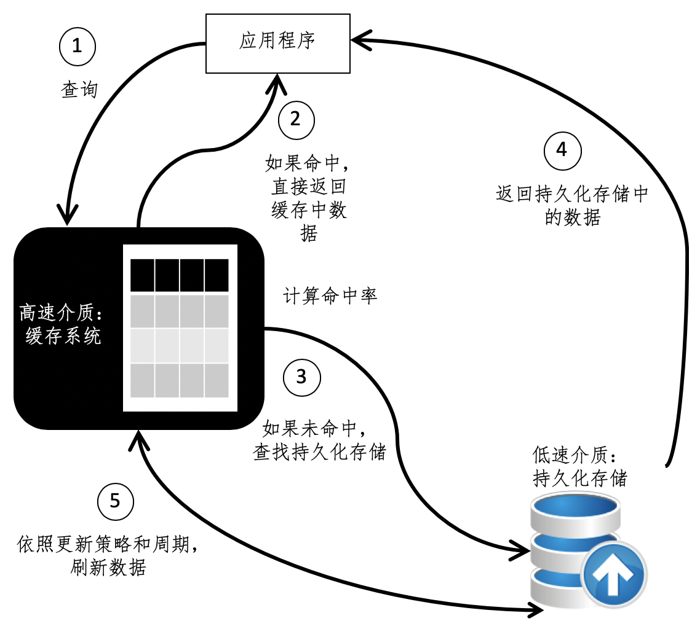
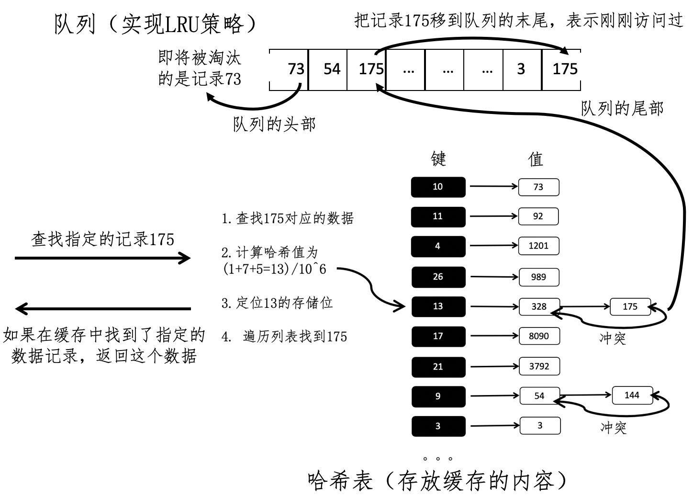

- 01 二进制：不了解计算机的源头，你学什么编程.md
- 02 余数：原来取余操作本身就是个哈希函数.md
- 03 迭代法：不用编程语言的自带函数，你会如何计算平方根？.md
- 04 数学归纳法：如何用数学归纳提升代码的运行效率？.md
- 05 递归（上）：泛化数学归纳，如何将复杂问题简单化？.md
- 06 递归（下）：分而治之，从归并排序到MapReduce.md
- 07 排列：如何让计算机学会“田忌赛马”？.md
- 08 组合：如何让计算机安排世界杯的赛程？.md
- 09 动态规划（上）：如何实现基于编辑距离的查询推荐？.md
- 10 动态规划（下）：如何求得状态转移方程并进行编程实现？.md
- 11 树的深度优先搜索（上）：如何才能高效率地查字典？.md
- 12 树的深度优先搜索（下）：如何才能高效率地查字典？.md
- 13 树的广度优先搜索（上）：人际关系的六度理论是真的吗？.md
- 14 树的广度优先搜索（下）：为什么双向广度优先搜索的效率更高？.md
- 15 从树到图：如何让计算机学会看地图？.md
- 16 时间和空间复杂度（上）：优化性能是否只是“纸上谈兵”？.md
- 17 时间和空间复杂度（下）：如何使用六个法则进行复杂度分析？.md
- 18 总结课：数据结构、编程语句和基础算法体现了哪些数学思想？.md
- 19 概率和统计：编程为什么需要概率和统计？.md
- 20 概率基础（上）：一篇文章帮你理解随机变量、概率分布和期望值.md
- 21 概率基础（下）：联合概率、条件概率和贝叶斯法则，这些概率公式究竟能做什么？.md
- 22 朴素贝叶斯：如何让计算机学会自动分类？.md
- 23 文本分类：如何区分特定类型的新闻？.md
- 24 语言模型：如何使用链式法则和马尔科夫假设简化概率模型？.md
- 25 马尔科夫模型：从PageRank到语音识别，背后是什么模型在支撑？.md
- 26 信息熵：如何通过几个问题，测出你对应的武侠人物？.md
- 27 决策树：信息增益、增益比率和基尼指数的运用.md
- 28 熵、信息增益和卡方：如何寻找关键特征？.md
- 29 归一化和标准化：各种特征如何综合才是最合理的？.md
- 30 统计意义（上）：如何通过显著性检验，判断你的A_B测试结果是不是巧合？.md
- 31 统计意义（下）：如何通过显著性检验，判断你的A_B测试结果是不是巧合？.md
- 32 概率统计篇答疑和总结：为什么会有欠拟合和过拟合？.md
- 33 线性代数：线性代数到底都讲了些什么？.md
- 34 向量空间模型：如何让计算机理解现实事物之间的关系？.md
- 35 文本检索：如何让计算机处理自然语言？.md
- 36 文本聚类：如何过滤冗余的新闻？.md
- 37 矩阵（上）：如何使用矩阵操作进行PageRank计算？.md
- 38 矩阵（下）：如何使用矩阵操作进行协同过滤推荐？.md
- 39 线性回归（上）：如何使用高斯消元求解线性方程组？.md
- 40 线性回归（中）：如何使用最小二乘法进行直线拟合？.md
- 41 线性回归（下）：如何使用最小二乘法进行效果验证？.md
- 42 PCA主成分分析（上）：如何利用协方差矩阵来降维？.md
- 43 PCA主成分分析（下）：为什么要计算协方差矩阵的特征值和特征向量？.md
- 44 奇异值分解：如何挖掘潜在的语义关系？.md
- 45 线性代数篇答疑和总结：矩阵乘法的几何意义是什么？.md
- 46 缓存系统：如何通过哈希表和队列实现高效访问？.md
- 47 搜索引擎（上）：如何通过倒排索引和向量空间模型，打造一个简单的搜索引擎？.md
- 48 搜索引擎（下）：如何通过查询的分类，让电商平台的搜索结果更相关？.md
- 49 推荐系统（上）：如何实现基于相似度的协同过滤？.md
- 50 推荐系统（下）：如何通过SVD分析用户和物品的矩阵？.md
- 51 综合应用篇答疑和总结：如何进行个性化用户画像的设计？.md
- 导读：程序员应该怎么学数学？.md
- 开篇词 作为程序员，为什么你应该学好数学？.md
- 数学专栏课外加餐（一） 我们为什么需要反码和补码？.md
- 数学专栏课外加餐（三）：程序员需要读哪些数学书？.md
- 数学专栏课外加餐（二） 位操作的三个应用实例.md
- 结束语 从数学到编程，本身就是一个很长的链条.md
46 缓存系统：如何通过哈希表和队列实现高效访问？
你好，我是黄申。
经过前三大模块的学习，我带你纵览了数学在各个计算机编程领域的重要应用。离散数学是基础数据结构和编程算法的基石，而概率统计论和线性代数，是很多信息检索和机器学习算法的核心。
因此，今天开始，我会综合性地运用之前所讲解的一些知识，设计并实现一些更有实用性的核心模块或者原型系统。通过这种基于案例的讲解，我们可以融会贯通不同的数学知识，并打造更加高效、更加智能的计算机系统。首先，让我们从一个缓存系统入手，开始综合应用篇的学习。
什么是缓存系统？
缓存（Cache）是计算机系统里非常重要的发明之一，它在编程领域中有非常非常多的应用。小到电脑的中央处理器（CPU）、主板、显卡等硬件，大到大规模的互联网站点，都在广泛使用缓存来提升速度。而在网站的架构设计中，一般不会像PC电脑那样采用高速的缓存介质，而是采用普通的服务器内存。但是网站架构所使用的内存容量大得多，至少是数个吉字节 （GB）。
我们可以把缓存定义为数据交换的缓冲区。它的读取速度远远高于普通存储介质，可以帮助系统更快地运行。当某个应用需要读取数据时，会优先从缓存中查找需要的内容，如果找到了则直接获取，这个效率要比读取普通存储更高。如果缓存中没有发现需要的内容，再到普通存储中寻找。
理解了缓存的概念和重要性之后，我们来看下缓存设计的几个主要考量因素。
第一个因素是硬件的性能。缓存的应用场景非常广泛，因此没有绝对的条件来定义何种性能可以达到缓存的资格，我们只要确保以高速读取介质可以充当相对低速的介质的缓冲。
第二个因素是命中率。缓存之所以能提升访问速度，主要是因为能从高速介质读取，这种情况我们称为“命中”（Hit）。但是，高速介质的成本是非常昂贵的，而且一般也不支持持久化存储，因此放入数据的容量必须受到限制，只能是全局信息的一部分。那么，一定是有部分数据无法在缓存中读取，而必须要到原始的存储中查找，这种情况称之为“错过”（Missed）。
我们通常使用能够在缓存中查找到数据的次数（\(|H|\)），除以整体的数据访问次数（\(|V|\)）计算命中率。如果命中率高，系统能够频繁地获取已经在缓存中驻留的数据，速度会明显提升。
\(HitRatio=\\frac{|H|}{|V|}\)
接下来的问题就是，如何在缓存容量有限的情况下，尽可能的提升命中率呢？人们开始研究缓存的淘汰算法，通过某种机制将缓存中可能无用的数据剔除，然后向剔除后空余的空间中补充将来可能会访问的数据。
最基本的策略包括最少使用LFU（Least Frequently Used）策略和最久未用LRU（Least Recently Used）策略。LFU会记录每个缓存对象被使用的频率，并将使用次数最少的对象剔除。LRU会记录每个缓存对象最近使用的时间，并将使用时间点最久远的对象给剔除。很显然，我们都希望缓存的命中率越高越好。
第三个因素是更新周期。虽然缓存处理的效率非常高，但是，被访问的数据不会一成不变，对于变化速度很快的数据，我们需要将变动主动更新到缓存中，或者让原有内容失效，否则用户将读取到过时的内容。在无法及时更新数据的情况下，高命中率反而变成了坏事，轻则影响用户交互的体验，重则会导致应用逻辑的错误。
为了方便你的理解，我使用下面这张图，来展现这几个主要因素之间的关系，以及缓存系统的工作流程。

如何设计一个缓存系统？
了解这些基本概念之后，我们就可以开始设计自己的缓存系统了。今天，我重点讲解如何使用哈希表和队列，来设计一个基于最久未用LRU策略的缓存。
从缓存系统的工作流程可以看出，首先我们需要确认某个被请求的数据，是不是存在于缓存系统中。对于这个功能，哈希表是非常适合的。第2讲我讲过哈希的概念，我们可以通过哈希值计算快速定位，加快查找的速度。不论哈希表中有多少数据，读取、插入和删除操作只需要耗费接近常量的时间，也就是O (1)的时间复杂度 ，这正好满足了缓存高速运作的需求。
在第18讲，我讲了用数组和链表来构造哈希表。在很多编程语言中，哈希表的实现采用的是链地址哈希表。这种方法的主要思想是，先分配一个很大的数组空间，而数组中的每一个元素都是一个链表的头部。随后，我们就可以根据哈希函数算出的哈希值（也叫哈希的key），找到数组的某个元素及对应的链表，然后把数据添加到这个链表中。之所以要这样设计，是因为存在哈希冲突。所以，我们要尽量找到一个合理的哈希函数，减少冲突发生的机会，提升检索的效率。
接下来，我们来聊聊缓存淘汰的策略。这里我们使用LRU最久未用策略。在这种策略中，系统会根据数据最近一次的使用时间来排序，使用时间最久远的对象会被淘汰。考虑到这个特性，我们可以使用队列。我在讲解广度优先搜索策略时，谈到了队列。这是一种先进先出的数据结构，先进入队列的元素会优先得到处理。如果充分利用队列的特点，我们就很容易找到上一次使用时间最久的数据，具体的实现过程如下。
第一，根据缓存的大小，设置队列的最大值。通常的做法是使用缓存里所能存放数据记录量的上限，作为队列里结点的总数的上限，两者保持一致。
第二，每次访问一个数据后，查看是不是已经存在一个队列中的结点对应于这个数据。如果不是，创造一个对应于这个数据的队列结点，加入队列尾部。如果是，把这个数据所对应的队列结点重新放入队列的尾部。需要注意，这一点是至关重要的。因为这种操作可以保证上一次访问时间最久的数据，所对应的结点永远在队列的头部。
第三，如果队列已满，我们就需要淘汰一些缓存中的数据。由于队列里的结点和缓存中的数据记录量是一致的，所以队列里的结点数达到上限值，也就意味着缓存也已经满了。刚刚提到，由于第二点的操作，我们只需要移除队列头部的结点就可以了。
综合上述关于哈希表和队列的讨论，我们可以画出下面这张框架图。

从这张图可以看到，我们使用哈希表来存放需要被缓存的内容，然后使用队列来实现LRU策略。每当数据请求进来的时候，缓存系统首先检查数据记录是不是已经存在哈希表中。如果不存在，那么就返回没有查找到，不会对哈希表和队列进行任何的改变；如果已经存在，就直接从哈希表读取并返回。
与此同时，在队列中进行相应的操作，标记对应记录最后访问的次序。队列头部的结点，对应即将被淘汰的记录。如果缓存或者说队列已满，而我们又需要插入新的缓存数据，那么就需要移除队列头部的结点，以及它所对应的哈希表结点。
接下来，我们结合这张图，以请求数据记录175为例，详细看看在这个框架中，每一步是如何运作的。
这里的哈希表所使用的散列函数非常简单，是把数据的所有位数加起来，再对一个非常大的数值例如10^6求余。那么，175的哈希值就是(1+7+5)/10^6=13。通过哈希值13找到对应的链表，然后进行遍历找到记录175。这个时候我们已经完成了从缓存中获取数据。
不过，由于使用了LRU策略来淘汰旧的数据，所以还需要对保存访问状态的队列进行必要的操作。检查队列，我们发现表示175的结点已经在队列之中了，说明最近这条数据已经被访问过，所以我们要把这个结点挪到队列的最后，让它远离被淘汰的命运。
我们再来看另一个例子，假设这次需要获取的是数据记录1228，这条记录并不在缓存之中，因此除了从低速介质返回获取的记录，我们还要把这个数据记录放入缓存区，并更新保存访问状态的队列。和记录175不同的是，1228最近没有被访问过，所以我们需要在队列的末尾增加一个表示1201的结点。这个时候，队列已经满了，我们需要让队列头部的结点73出队，然后把相应的记录73从哈希表中删除，最后把记录1228插入到哈希表中作为缓存。
总结
当今的计算机系统中，缓存扮演着非常重要的角色，小到CPU，大到互联网站点，我们都需要使用缓存来提升系统性能。基于哈希的数据结构可以帮助我们快速的获取数据，所以非常适合运用在缓存系统之中。
不过，缓存都需要相对昂贵的硬件来实现，因此大小受到限制。所以，我们需要使用不同的策略来淘汰不经常使用的内容，取而代之一些更有可能被使用的内容，增加缓存的命中率，进而提升缓存的使用效果。为了实现这个目标，人们提出了多种淘汰的策略，包括LRU和LFU。
综合上面两点，我们提出一种结合哈希表和队列的缓存设计方案。哈希表负责快速的存储和更新被缓存的内容，而队列负责管理最近被访问的状态，并告知系统哪些数据是要被淘汰并从哈希表中移除。
思考题
请根据今天所讲解的设计思想，尝试编码实现一个基于LRU淘汰策略的缓存。哈希表部分可以直接使用编程语言所提供的哈希类数据结构。
欢迎留言和我分享，也欢迎你在留言区写下今天的学习笔记。你可以点击“请朋友读”，把今天的内容分享给你的好友，和他一起精进。
© 2019 - 2023 Liangliang Lee. Powered by gin and hexo-theme-book.